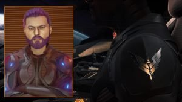

Commanders are sold the idea that between their Remlock suit, and the top of the line FSD equipped escape pod system they will almost always, 99.999% of the time make it back to file an insurance claim and make another go of it in a new ship. This is true, but for a given value of “You”. While using even the most generous power estimates, our power plants don’t have anywhere near enough power to throw a physical mass 60,000 light years (Napkin math in the bar on the Gnosis counts as credible science sourcing right?). They do however have the power to send a highly encrypted and compressed micro cellular scan provided by your own Remlock suit seconds before the system “engages stasis”. When you wake up and after you deal with the credit hassles, there you are your last port of calls landing bay before you. Installed in your ship as if you didn’t just decompress on the surface of an alien planet on the other side of the Galactic Core. That my friends is one hell of a frame shift jump.
I have often wondered about the economic disparity of Pilot’s Federation CMDR’s compared to the average galactic citizen. With what I lose in my couch cushions, I could cripple an economy in an eye blink if there weren’t very tight controls on how much and on what I can spend my credits on. Why is that? Am I not a standard citizen? The answer is NO! I am a CMDR…. Cloned Meat, that Doesn’t Remember he is a clone.
As I write this I’m struck by the decades of parental resentment I’ve encountered over how I spent the years after they got me into the Pilot’s Federation. How much did this cost them? Both financially and in terms of social currency? It couldn’t have been cheap to get me into the CMDR’s Program. Only to then see me do what I did with it back in my early days…. Yeah I’d probably be pretty pissed at that kid too, no matter how much of an estate he can afford to buy me at a later date when he realizes he’s been a piece of shit…..(Check your accounts Mom, I’ll call for Winterfest.)
You don’t often realize it when you’re on your 70th loop of a cargo run, but the average Commander could cripple the economy of a regional trading cluster if we didn’t have these strict controls on our spending. I hear my replies already…. “How can these spending controls even be legal and weren’t you rambling about clones?”. The reason all of this IS legal is because we are clones, and our meat and the facilitation of consciousness transfer is solely in their hands. They effectively own us, and hold the technology that runs our “Mortality Balance”. As long as we remain solvent and flush with credits we remain alive, no matter the circumstance.
I offer as some proof, a brief account of my many deaths. I have fallen in combat more times than I can count personally but I’m sure it is in a risk assessment spreadsheet somewhere….I have choked to death trapped on a dead moon after the landing AI blew up my ship. I have dived head first into every type of star and lethal stellar phenomena I could find. I have crushed myself under tons of metal and rock by ignoring the gravity sensors. Situations that no escape pod could survive, and yet here I sit, writing this. I remember every time the fade to black, the receipt for services, and then the cockpit, as if I woke up in the chair.
This brings me to the .0001%, in the recorded history of the modern day Pilot’s Federation there is only 1 known and documented case of this system failing. On April 29th 3304, CMDR Kahina Loren, also known as Salome became the only known CMDR to have her mortality subscription cancelled despite having the obvious funds to cover the costs. Make of that what you will.
To wrap this up I offer this closing thought. The Pilot’s Federation controls everything, and now they even control WHO survives the darkest void. They have crafted the perfect weapon, spy, agitator and surveyor. A living probe, capable of something the ancient Guardian species obliterated themselves over… The wedding of a consciousness with a meat sack from across the stars, brought to you by the the shadowiest of shadow corporations, and they can turn you off.
I am CMDR Larzok, Prophet of the Meow, Journalist for Canonn Media, and a dozen other titles besides… I have died 397 times. I am Cloned Meat, and I Don’t Remember how this all started, or if after publishing this piece I will make it to 398. Or more importantly why this for profit immortality isn’t offered to everyone?